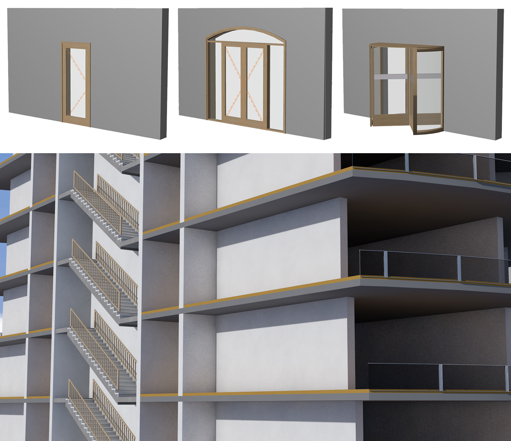
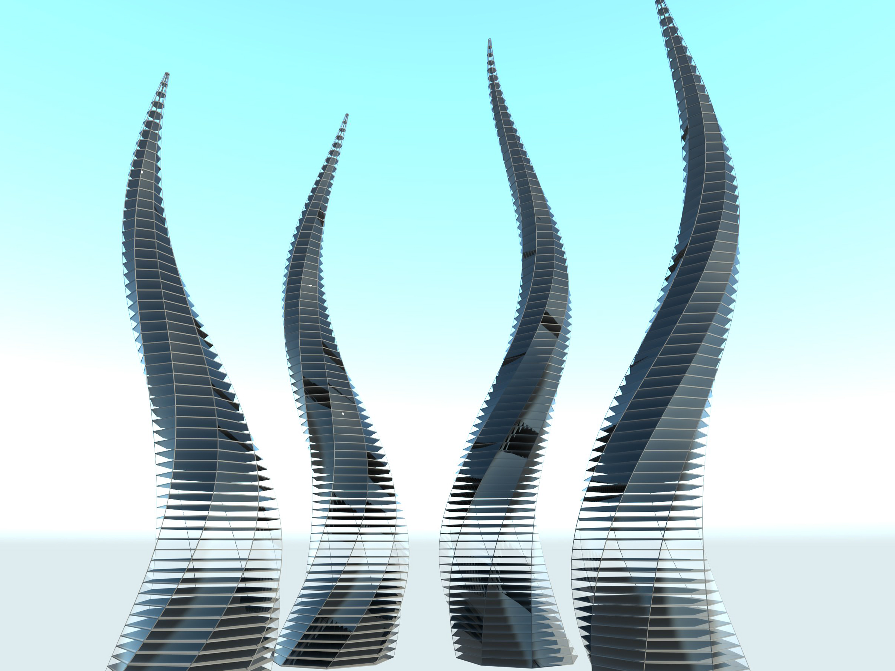
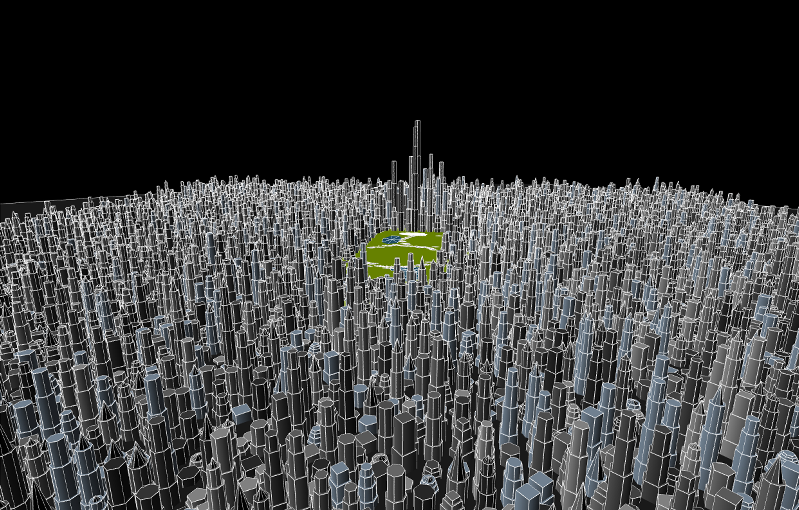
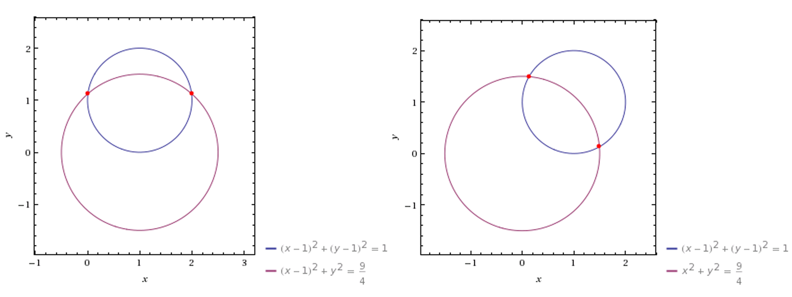
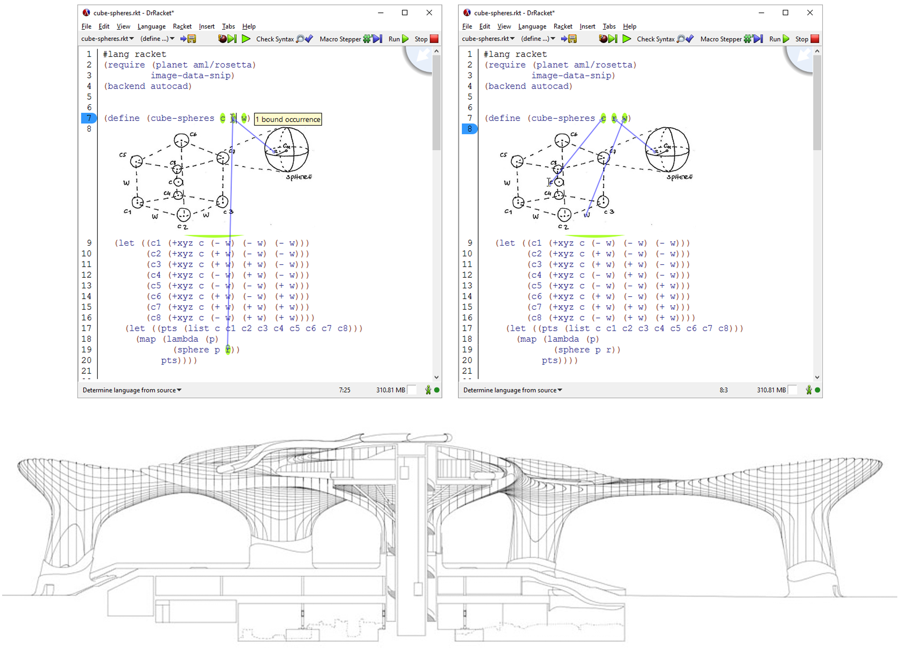
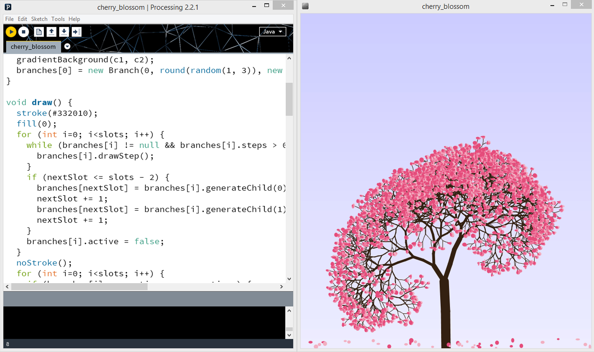
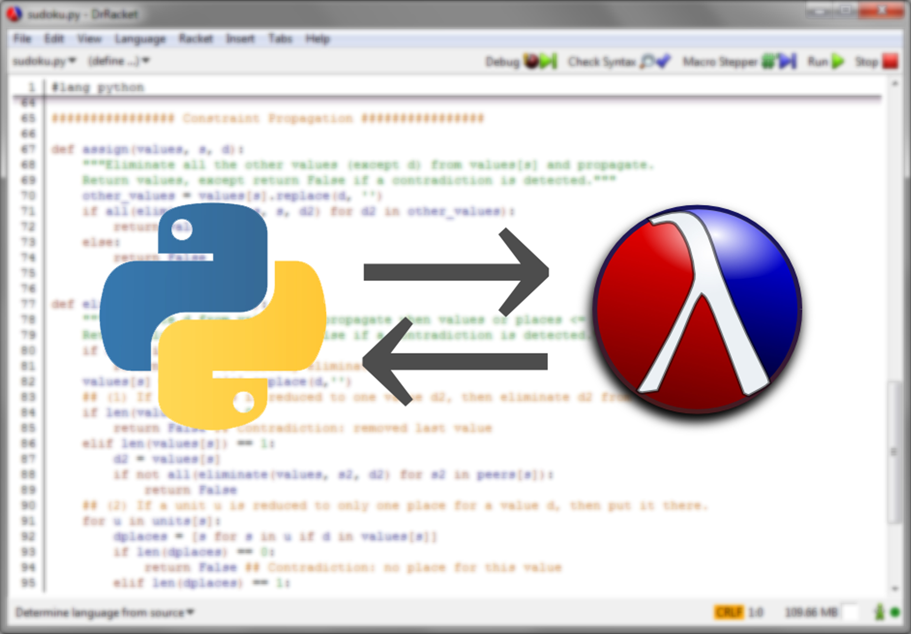
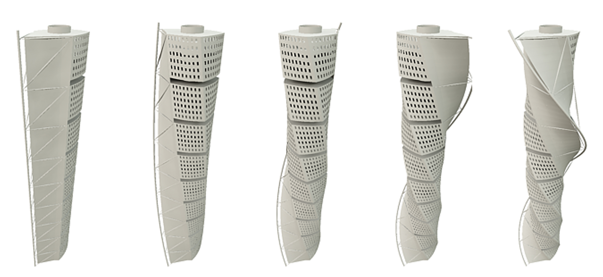
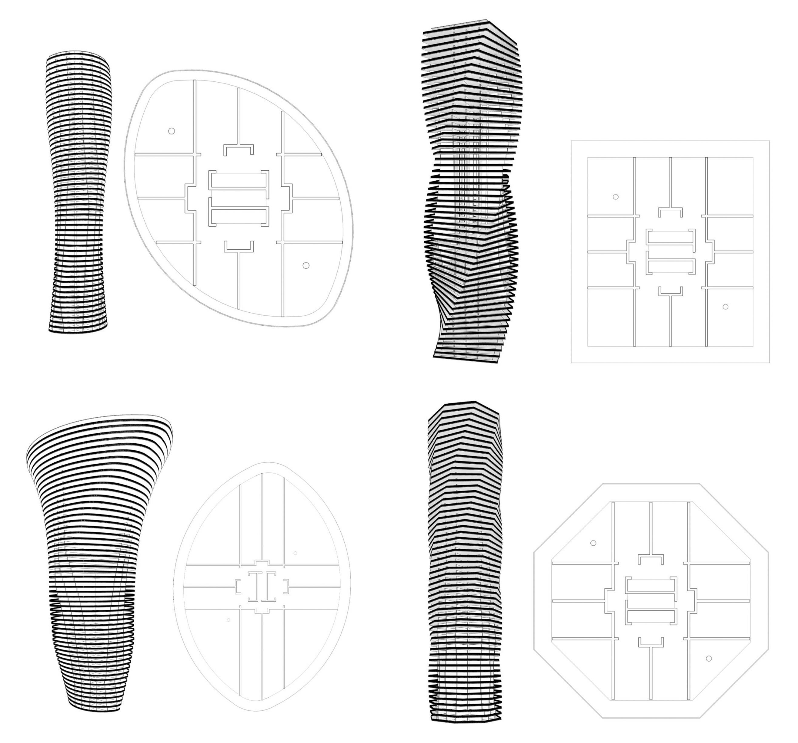
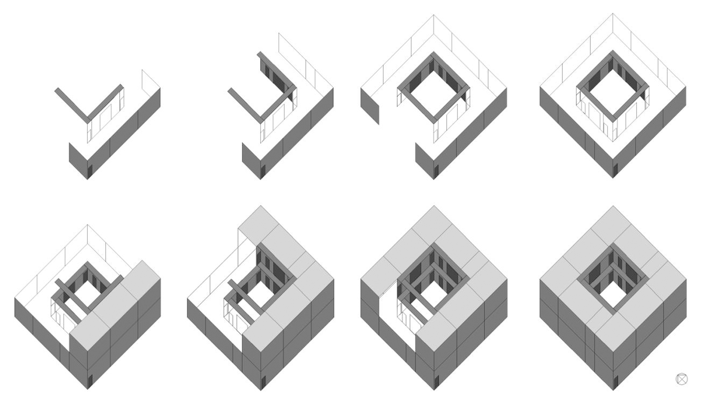

RESEARCH TIMELINE
Computer Engineering

A Browser-based Programming Environment for Generative Design
2017
Generative Design for Building Information Modelling
2016

Generative Design for Building Information Modelling
2016

Fast Visualization of Large Architectural Models
2016

Modelação Geométrica com Restrições
2016

An Enhanced Programming Environment for Generative Design
2016

P2R: Implementation of Processing in Racket
2015

PyonR: A Python Implementation for Racket
2014

DESIGNA - A Shape Grammar Interpreter
2013
Modern Programming for Generative Design
2012

A High-Level Pedagogical 3D Modelling Language and Framework
2010
Architecture
Integrated Algorithmic Design
2017

Generative Design for Energy Efficiency: Energy Analysis and Optimization
2017

Performance-based design
2017
A-BIM: Algorithmic-based building information modelling
2016

Generative Design for BIM: Its influence in the design process
2015

DrAFT: An Algorithmic Framework for Facade Design
2015

Generative Design: a new stage in the design proces3
2013
Automatização Digital na Produção de Maquetes
2013
Sistemas Generativos de Projecto: Integração de Ferramentas Digitais no Projecto de Arquitectura: Aplicação ao Caso de Estudo: a Casa Pátio da Medina de Marrakech
2009
